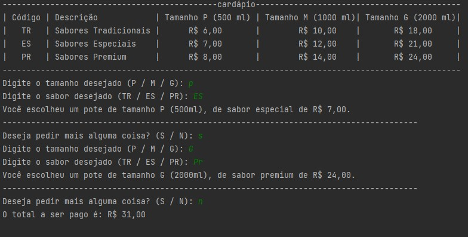

Visão Geral do Pacote Office
Iniciando o conteúdo sobre o pacote Office vamos do inicio, O Pacote Office, também conhecido como Microsoft Office, é um conjunto de aplicativos de software de produtividade desenvolvido pela Microsoft. Este pacote é amplamente utilizado em escritórios, escolas, empresas e residências ao redor do mundo. Ele oferece uma série de ferramentas que ajudam a criar, editar e gerenciar documentos, planilhas, apresentações, e-mails e outras formas de comunicação e dados. Abaixo, detalharemos cada um dos principais aplicativos que compõem o Pacote Office:
Formação acadêmica

O Microsoft Word é um processador de texto robusto que permite criar, formatar e editar documentos. Ele é amplamente utilizado para a criação de textos simples, como cartas e relatórios, até documentos complexos, como teses e livros. O Word oferece uma ampla gama de ferramentas de formatação, revisão ortográfica e gramatical, além de funcionalidades avançadas como a inserção de gráficos, tabelas, imagens e hyperlinks. Ele também permite a colaboração em tempo real, onde vários usuários podem trabalhar no mesmo documento simultaneamente.
Portfólio
O Microsoft Excel é um programa de planilhas eletrônicas que permite a organização, análise e visualização de dados numéricos. Ele é extremamente popular para tarefas que envolvem cálculos financeiros, estatísticas e gráficos. O Excel possui funcionalidades avançadas, como tabelas dinâmicas, fórmulas complexas,gráficos variados e a capacidade de automatizar tarefas repetitivas através de macros. Suas capacidades de análise de dados o tornam uma ferramenta essencial para profissionais em finanças, contabilidade e análise de dados.
Contatos
O Microsoft PowerPoint é uma ferramenta de criação de apresentações que permite aos usuários criar slides que podem incluir texto, imagens, gráficos, vídeos e animações. É amplamente utilizado em ambientes corporativos e educacionais para apresentações de negócios, treinamentos e palestras. O PowerPoint oferece uma variedade de temas e modelos que facilitam a criação de apresentações visuais impactantes. Ele também permite a criação de transições e animações para tornar as apresentações mais dinâmicas e envolventes.